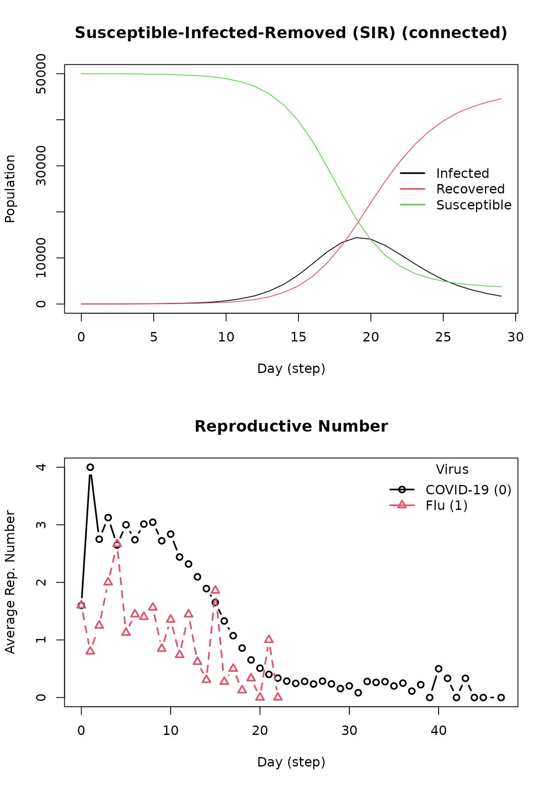

Getting started with epiworldR
Derek Meyer
George Vega Yon
2023-04-25
getting-started.RmdIntroduction
epiworldR is an R package that provides a fast (C++ backend) and highly- customizable framework for building network-based transmission/diffusion agent- based models [ABM]. Some key features of epiworldR are the ability to construct multi-disease models (e.g., models of competing multi-pathogens/multi-rumor,) design mutating pathogens, architect population-level interventions, and build models with an arbitrary number of compartments/states (beyond SIR/SEIR.)
Example 1: Simulating an SIR model
Setup and running the model
This example implements a social network with parameters listed within the ModelSIRCONN function. The disease name is specified (COVID-19), 100000 agents are initialized, disease prevalence of 0.001 is declared, each agent will contact two others (contact_rate), probability of transmitting the disease for any given agent is 0.3, and probability of recovery is set to \(\frac{1}{3}\). To create this model on epiworldR, simply use the ModelSIRCONN function. From here, the example will take you through the basic features of epiworldR.
library(epiworldR)
model_sir <- ModelSIRCONN(
name = "COVID-19",
n = 100000,
prevalence = 0.001,
contact_rate = 2,
prob_transmission = 0.3,
prob_recovery = 1/3
)Printing the model shows us some information. First, the name of the model, population size, number of entities (think of these as public spaces in which agents can make social contact with one another), the duration in days, number of variants, amount of time the last replicate took to run (last run elapsed t), and rewiring status (on or off). The next piece of information you will see is a list of the viruses used in the model. In this case, COVID-19 was the only disease used. Note that epiworldR has the capability to include more than one virus in a model. Tool(s) lists any tools that agents have to fight the virus. Examples of this may include masking, vaccines, social distancing, etc. In this model, no tools are specified. Lastly, the model parameters are listed, which originate from the parameters specified in the model.
model_sir
#>
#> ________________________________________________________________________________
#> SIMULATION STUDY
#>
#> Name of the model : Susceptible-Infected-Removed (SIR) (connected)
#> Population size : 100000
#> Number of entities : 0
#> Days (duration) : 0 (of 0)
#> Number of variants : 1
#> Last run elapsed t : -
#> Rewiring : off
#>
#> Virus(es):
#> - COVID-19 (baseline prevalence: 0.10%)
#>
#> Tool(s):
#> (none)
#>
#> Model parameters:
#> - Contact rate : 2.0000
#> - Prob. Recovery : 0.3333
#> - Prob. Transmission : 0.3000To execute the model, use the run function with the SIR model object, number of simulation days, and an optional seed for reproducibility. Next, print out the results from the simulated model using model_sir.
run(model_sir, ndays = 50, seed = 1912)
#> _________________________________________________________________________
#> |Running the model...
#> |||||||||||||||||||||||||||||||||||||||||||||||||||||||||||||||||||||||| done.
#> | done.
model_sir
#>
#> ________________________________________________________________________________
#> SIMULATION STUDY
#>
#> Name of the model : Susceptible-Infected-Removed (SIR) (connected)
#> Population size : 100000
#> Number of entities : 0
#> Days (duration) : 50 (of 50)
#> Number of variants : 1
#> Last run elapsed t : 190.00ms
#> Last run speed : 26.24 million agents x day / second
#> Rewiring : off
#>
#> Virus(es):
#> - COVID-19 (baseline prevalence: 0.10%)
#>
#> Tool(s):
#> (none)
#>
#> Model parameters:
#> - Contact rate : 2.0000
#> - Prob. Recovery : 0.3333
#> - Prob. Transmission : 0.3000
#>
#> Distribution of the population at time 50:
#> - (0) Susceptible : 99900 -> 99900
#> - (1) Infected : 100 -> 0
#> - (2) Recovered : 0 -> 100
#>
#> Transition Probabilities:
#> - Susceptible 1.00 0.00 0.00
#> - Infected 0.00 0.62 0.38
#> - Recovered 0.00 0.00 1.00There are two additional sections in the model summary after running the model object, the first being the distribution of the population at time 50. This section describes the flow of agents from each state (SIR) after 50 days. In the example, you’ll see the number of agents in the susceptible state decreased from 99900 to 26456, the number of agents in the infected state increased from 100 to 501, and the number of recovered agents increased to 73043 after 50 days. The counts for these states will of course, change based on model parameters or simulation run-time. The transmission probabilities section outputs a 3x3 matrix that describes the probability of moving from one state to another. For example, in the susceptible row, each agent has a 0.97 probability of remaining in the susceptible state with a 0.03 probability of moving from the susceptible state to the infected state. Notice in all cases, there is a probability of 0 to skip states. In other words, it is impossible for an agent to jump from the susceptible state to the recovered state; that agent must pass through the infected state in order to then progress to the recovered state. The same logic applies with moving backwards; an agent cannot become susceptible again after being infected.
## Plot
Extracting information
After running the epiworldR model, below is a list of all the functions that can be called using the epiworld model object.
methods(class = "epiworld_model")
#> [1] add_tool_n add_tool
#> [3] add_virus_n add_virus
#> [5] agents_from_edgelist agents_smallworld
#> [7] get_hist_tool get_hist_total
#> [9] get_hist_transition_matrix get_hist_variant
#> [11] get_n_replicates get_n_tools
#> [13] get_n_variants get_name
#> [15] get_ndays get_param
#> [17] get_reproductive_number get_states
#> [19] get_transition_probability print
#> [21] queuing_off queuing_on
#> [23] run_multiple run
#> [25] set_name set_param
#> [27] size verbose_off
#> [29] verbose_on
#> see '?methods' for accessing help and source codeTo demonstrate, start with the basic plot and get_hist_total functions.
plot(model_sir)=======
As evident from the above plot, the SIR model constructed from epiworldR displays the changes in susceptible, infected, and recovered case counts over time (days). Notice after a certain amount of time, the curves flatten. Below, a table representation of the above plot is printed, complete with each state within the SIR model, dates, and agent counts.
head(get_hist_total(model_sir))
#> dates state counts
#> 1 0 Susceptible 99900
#> 2 0 Infected 100
#> 3 0 Recovered 0
#> 4 1 Susceptible 99900
#> 5 1 Infected 59
#> 6 1 Recovered 41An important statistic in epidemiological models is the reproductive number
repnum <- get_reproductive_number(model_sir)
head(repnum)
#> [1] variant source source_exposure_dates
#> [4] counts
#> <0 rows> (or 0-length row.names)epiworldR has a method to automatically plot the reproductive number. This function takes the average of values in the above table for each date and repeats until all dates have been accounted for. For example, on average, individuals who acquired the virus on the 10th day transmit the virus to roughly 1.7 other individuals.
x <- plot(repnum, type="b")
#> Warning in min(x, na.rm = na.rm): no non-missing arguments to min; returning
#> Inf
#> Warning in max(x, na.rm = na.rm): no non-missing arguments to max; returning
#> -Inf
#> Warning in min(x, na.rm = na.rm): no non-missing arguments to min; returning
#> Inf
#> Warning in max(x, na.rm = na.rm): no non-missing arguments to max; returning
#> -InfAdding more viruses/variants
epiworldR supports multi-variant models, the below code gives instructions on how to implement this. Using the “virus” function, give a name to the new virus/variant with its corresponding probability of infecting any given agent. In this example, prob_infecting is set to 1.0 as the flu is very contagious. In order to officially add this new virus to the model, use the “add_virus” function by calling the original epiworldR model object, the new virus, and the new virus’ prevalence (which is set to 0.01 in this example).
# Building the virus
flu <- virus(name = "Flu", prob_infecting = 1.0)
# Adding the virus to the model
add_virus(model_sir, flu, .01)After running the updated model with the new virus included for 50 days, the output below describes the simulation. To confirm that the flu is included, notice the presence of “Flu” in the Virus(es) section of the output. All other output is interpretable as specified in previous sections.
run(model_sir, ndays = 50, seed = 1912)
#> _________________________________________________________________________
#> |Running the model...
#> |||||||||||||||||||||||||||||||||||||||||||||||||||||||||||||||||||||||| done.
#> | done.
model_sir
#>
#> ________________________________________________________________________________
#> SIMULATION STUDY
#>
#> Name of the model : Susceptible-Infected-Removed (SIR) (connected)
#> Population size : 100000
#> Number of entities : 0
#> Days (duration) : 50 (of 50)
#> Number of variants : 2
#> Last run elapsed t : 190.00ms
#> Total elapsed t : 381.00ms (2 runs)
#> Last run speed : 26.19 million agents x day / second
#> Average run speed : 26.21 million agents x day / second
#> Rewiring : off
#>
#> Virus(es):
#> - COVID-19 (baseline prevalence: 0.10%)
#> - Flu (baseline prevalence: 1.00%)
#>
#> Tool(s):
#> (none)
#>
#> Model parameters:
#> - Contact rate : 2.0000
#> - Prob. Recovery : 0.3333
#> - Prob. Transmission : 0.3000
#>
#> Distribution of the population at time 50:
#> - (0) Susceptible : 98900 -> 98900
#> - (1) Infected : 1100 -> 0
#> - (2) Recovered : 0 -> 1100
#>
#> Transition Probabilities:
#> - Susceptible 1.00 0.00 0.00
#> - Infected 0.00 0.67 0.33
#> - Recovered 0.00 0.00 1.00Plotting the previous model (including the flu) yields the following. Notice the presence of two reproductive numbers plotted over time. Variant 0 refers to COVID-19 and variant 1 refers to the flu.
repnum2 <- get_reproductive_number(model_sir)
op <- par(mfrow = c(2,1))
plot(model_sir)
plot(repnum2, type="b")
#> Warning in min(x, na.rm = na.rm): no non-missing arguments to min; returning
#> Inf
#> Warning in max(x, na.rm = na.rm): no non-missing arguments to max; returning
#> -Inf
#> Warning in min(x, na.rm = na.rm): no non-missing arguments to min; returning
#> Inf
#> Warning in max(x, na.rm = na.rm): no non-missing arguments to max; returning
#> -Inf
par(op)
Tools
Now, the implementation of tools to combat any viruses and variants in the model will be demonstrated. First, for the sake of simplicity, remove the flu virus from the SIR model object (keep in mind the index for the flu virus in the model object is 1). Next, provide parameters for the new tool using the “tool” function. These parameters include the name of the tool, any reduction in probabilities for the SIR model parameters, and increased probability of recovery option. In order to add the tool to the SIR model, use the “add_tool” function with the SIR model object, new tool, and prevalence of the tool. In this example, assume that 85% of the population will have received the vaccination.
# Removing the flu virus from the model
rm_virus(model_sir, 1)
vaccine <- tool(
name = "Vaccine",
susceptibility_reduction = .9,
transmission_reduction = .5,
recovery_enhancer = .5,
death_reduction = .9
)
add_tool(model_sir, vaccine, 0.85)
repnum3 <- get_reproductive_number(model_sir)
op <- par(mfrow = c(2,1))
plot(model_sir)
plot(repnum3, type="b")
#> Warning in min(x, na.rm = na.rm): no non-missing arguments to min; returning
#> Inf
#> Warning in max(x, na.rm = na.rm): no non-missing arguments to max; returning
#> -Inf
#> Warning in min(x, na.rm = na.rm): no non-missing arguments to min; returning
#> Inf
#> Warning in max(x, na.rm = na.rm): no non-missing arguments to max; returning
#> -Inf
par(op)